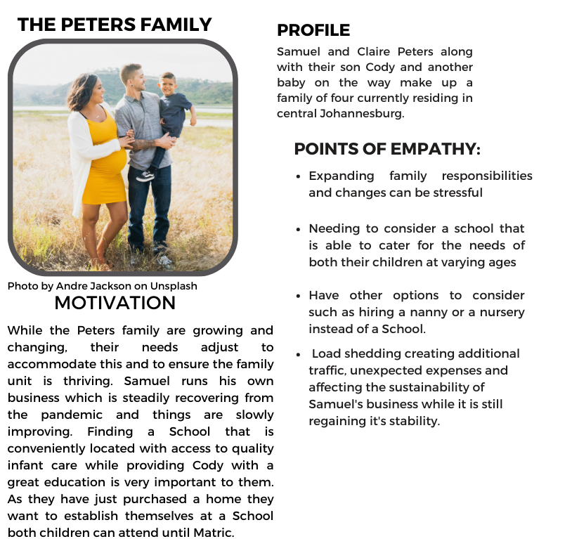
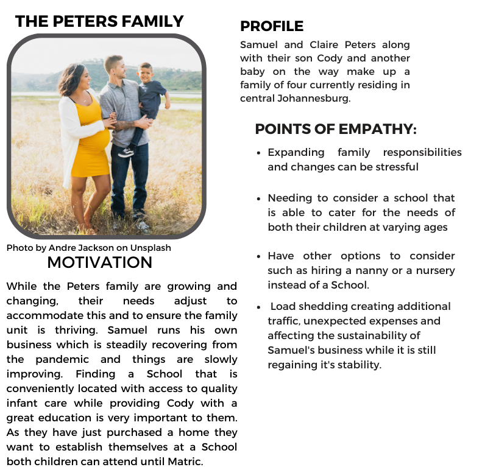

Improving the Online Enrollment Process for Current & Potential Parents
Project type:
Desktop, Solicitied Design
Project date:
December 2022 - On-Going
Tools Used:

Role:
Researcher, UX Designer
About
Nova Pioneer Education Group is a pan - African independent school network offering preschool through secondary education for students from ages 3 through 19, and is a launchpad where ambitious young Africans can begin to shape a better future for the continent and the world.

.png)
The Issues:
I currently worked at Nova Pioneer dealing within customer service, there were moments when new parents would
talk to me about their confusion on our application and enrollment process.
Parents found it time
consuming and we have had parents abandon the enrollment process altogether due to the confusion and the
redundant steps many parents had to take when they had more than one child to enrol.
The information for enrollment and fees was not in a central area and parents would spend a lot of time trying
to locate fee information and completing the application form. Parents were not given a clear understanding on
the steps this process involved which left users confused and frustrated.
There are also no shortened application options for parents who currently already had children at Nova
Pioneer, which meant current parents had to go through this process again too when enrolling additional
children.

 



.png)
.png)
.png)
.png)
.png)
.png)